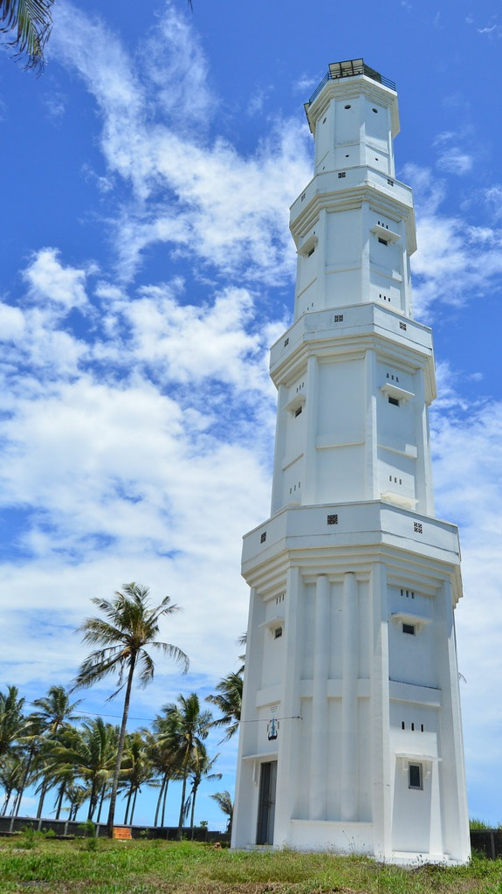

M

A

D

A
S
A
R

I
Pantai Madasari merupakan Pantai Pangandaran yang masih asri, dan pengelolaannya masih di bawah pemerintah desa setempat.Namun fasilitas pokok seperti toilet,area parkir,sudah tersedia dikawasan tersebut.Pantai Madasari idealnya menjadi destinasi wisata penutup, saat anda berkunjung ke pantai-pantai yang ada di Pangandaran, khususnya setelah berkunjung ke Pantai Batu Hiu Pangandaran, atau Green Canyon Pangandaran.Maksud menjadi wisata penutup adalah menjadikan lokasi Pantai Madasari menjadi tempat menginap.Tetapi, hal tersebut bukan menjadi sebuah pertanda ada penginapan di Pantai Madasari.
Para pengunjung bisa melakukan aktivitas camping di Pantai Madasari, karena salah satu daya tarik utama pantai tersebut adalah camping sebuah pantai, dengan suasana yang nyaman, dan tenang tanpa banyak riuh pengunjung.Jalan menuju Pantai Madasari dari pusat Kabupaten Pangandaran bisa dilalui oleh jenis kendaraan seperti motor,mobil,bus dan kendaraan roda empat yang lainnya.Kondisi jalannya juga sudah bagus hingga kearea parkiran Pantai Madasari.Akses jalan menuju Pantai Madasari akan melewati sepanjang pesisir pantai.Jarak Pantai Madasari dari pusat Kabupaten Pangandaran sekitar 20km, dengan rata-rata waktu tempuh sekitar 30menit perjalanan.